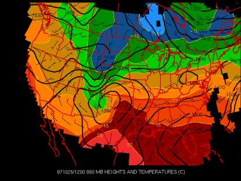

Temperature Gradients Help Page
Temperature gradients are important for severe weather because they indicate where two different air masses are colliding. They are also a good sign that a front is in the area. A large temperature gradient indicates a strong front and the potential for severe weather.

A good example of a large temperature gradient can be seen in New Mexico, through southeastern Colorado into Kansas, and up through central Nebraska. This would be an excellent area to look for severe weather on this day.